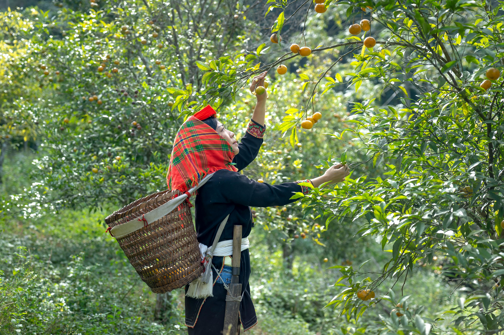
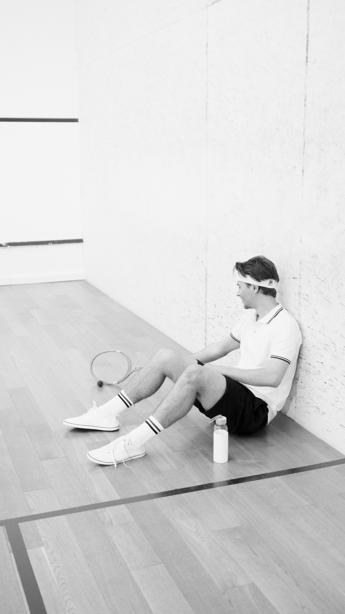

NOTRE PROGRAMMES D'ACTIVITES
Voici l'agenda ainsi que les activites que nous realisons de maniere recurrente cette annee.
| Aperçu | Date / Période | Activité principale | Objectif Target |
|---|---|---|---|
| Janvier - Mars | Campagne de Vaccination Mobile | Protéger 5000 enfants en zone rurale | |
 |
Avril - Juin | Distribution de Kits Nutritionnels | Aider les familles nécessiteuses |
 |
Juillet | Ateliers d'Hygiène Scolaire | Éduquer les élèves sur les gestes barrières |
 |
Août - Octobre | Dépistage Diabète et Tension | Consultations gratuites pour tous |
 |
Novembre | Marathon "Courir pour la Santé" | Mobiliser les jeunes et collecter des fonds |